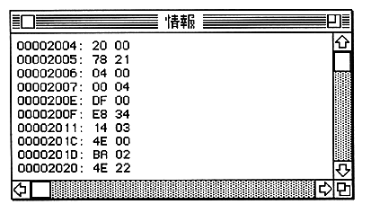
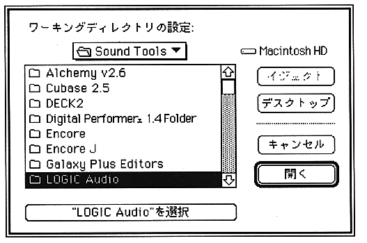

Return to previous page ｜ Return to menu ｜ Go to next page
-
● Verify
Corresponds to the V and VB commands of the - console command. The operation is almost the same as downloading, but the verification result is displayed in the following information window.

● If there are too many results, the oldest information window contents will be lost.
-
Working directory
When - working directory is selected, the following dialog is displayed. Please decide with the button at the bottom of the dialog.

-
Close
- Closes the window at the forefront.
-
● End
- Close SSBug.
Return to previous page ｜ Return to menu ｜ Go to next page